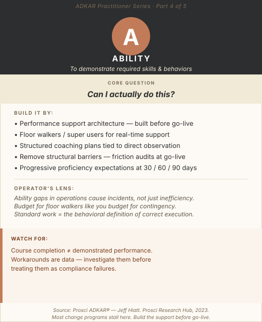

Training is complete. The curriculum was well-designed and role-specific. Comprehension checks looked good. Go-live is green.
Two months later, the project sponsor is asking why 40% of the team is still running the old process.
This is the Ability gap, and it is the most reliably underestimated barrier point in organizational change. It is also the most operationally consequential. Because Ability gaps don't announce themselves before go-live. They appear after it, in production, where the cost of getting them wrong is no longer theoretical.
Understanding why Ability gaps form — and how to systematically prevent them — is where the practitioner who is serious about sustainable change separates themselves from those who check boxes and move on.
Foundation
What Ability Actually Is
Knowledge tells a person what to do and how to do it in theory. Ability is whether they can actually do it — in the real world, under real conditions, with real stakes.
Prosci describes the gap between Knowledge and Ability as the gap between classroom performance and live performance. People can understand a process perfectly in a training session and still struggle to execute it when they're simultaneously managing their regular workload, navigating a live system that behaves differently than the sandbox, handling an unexpected edge case, and working without the trainer standing next to them.
This gap is not a failure of intelligence or effort. It is a natural product of the difference between learning conditions and working conditions. Change management programs that expect full proficiency at go-live are not being ambitious — they are being unrealistic, and building a performance trough that undermines adoption confidence precisely when it matters most.
Ability is built through practice, feedback, coaching, and the gradual removal of barriers between the person and the new behavior. It cannot be compressed into a training event, and it cannot be assumed from a completion certificate.

ADKAR Practitioner Series — Part 4: Ability. The gap between the training room and the production floor.
Diagnosis
How to Confirm an Ability Barrier Point
The Ability gap can look like a Desire problem from a distance: people appear to be avoiding the new process, reverting to old behaviors, or finding workarounds. The distinguishing question: does the person want to perform the new behavior but struggle to do so consistently under real conditions?
Ability Gap Signals
- Performance varies significantly across individuals who received the same training
- Errors are concentrated in the first weeks post-go-live but gradually decreasing — the shape of a learning curve
- People are following the spirit of the new process but making procedural errors in execution
- Workarounds are being created not to avoid the change, but to compensate for specific friction points in the new process
- People report feeling "not confident enough yet" rather than "I don't want to do this"
- Help desk or supervisor question volume is high and concentrated on specific process steps
The Ability diagnostic requires observation, not just conversation. Ask someone to execute a real task in the new process while you observe. The gap between their description of the process and their execution of it tells you exactly where Ability development is needed.
Program Design
Eight Blueprints for Building Ability
The Performance Support Architecture — Build It Before Go-Live
The single most impactful Ability investment is one that happens before go-live: designing the full performance support infrastructure that will be in place when the team needs help in production. Most change programs build training. Fewer build the support system that translates training into performance.
A performance support architecture includes:
- Who to call. A named point of contact (not just "the help desk") for process and system questions by function.
- Where to find guidance. The microlearning library, job aids, and escalation path — accessible in 30 seconds, not buried in an intranet.
- Who is physically or virtually present. Floor walkers or super users assigned to specific teams for the first weeks post-go-live.
- What to do when the exception happens. Pre-documented exception handling paths for the top 10 scenarios anticipated as go-live risks.
- The escalation protocol. For issues that can't be resolved at the team level, a clear path with response SLAs.
Designing this architecture 4–6 weeks before go-live — not scrambling to build it after the first wave of incidents — is one of the highest-leverage actions a change practitioner can take.
The Floor-Walker / Super User Model
Floor walkers are dedicated support personnel — often internal volunteers from the affected workforce, recognized and compensated for their additional role — who are physically or virtually present during the first weeks post-go-live to provide real-time, hands-on support. The model converts the abstract knowledge from training into practiced performance through immediate feedback.
Research on complex change implementations suggests a ratio of approximately one floor walker per 15–20 users for high-complexity changes in the first two weeks post-go-live. Design considerations:
- Selection: Credible peers, not project team members. An experienced operator seen as having genuine expertise is more effective than a project analyst who knows the system from the outside.
- Preparation: Floor walkers need deeper training than the general population — they must handle edge cases and escalate appropriately.
- Duration: Typically 2–4 weeks of intensive presence, tapering to on-call availability.
- Feedback loop: Floor walkers are your best source of real-time intelligence on where Ability gaps are concentrated — build a structured daily debrief into the model.
Coaching Plans Tied to Direct Observation
People managers are the most consistent source of Ability support available, but only if they know what to do. Generic direction ("support your team through the transition") produces generic behavior. Structured coaching plans produce targeted development.
A coaching plan for the Ability phase gives managers: a behavioral observation guide (the specific new behaviors to look for, and what "correct execution" looks like); a conversation framework for coaching — not discipline — when they observe an error; a frequency cadence (daily in week one, weekly by weeks three through six); and an escalation protocol for when a person is genuinely struggling despite coaching.
Prosci's CLARC framework for people managers — Communicator, Liaison, Advocate, Resistance Manager, Coach — puts the coaching role explicitly in the people manager's accountability. The Ability phase is where the Coach role is most operationally critical.
Ability Sprints
For complex changes where the full suite of new capabilities cannot be built simultaneously, Ability sprints provide a structured approach to progressive proficiency development.
An Ability sprint is a time-boxed cycle (typically one to two weeks) focused on mastering a specific behavior or process segment, with: a clear definition of what "competent execution" looks like; daily practice scenarios or real-world reps with coached feedback; a defined measure of proficiency (e.g., "executes this step without guidance 80% of the time by end of sprint"); and a retrospective to identify what worked and what carries into the next sprint.
The sprint model is effective because it makes the Ability development journey manageable and measurable — breaking a daunting new capability into visible, achievable milestones. People who struggle with the full complexity of a new process often succeed sprint by sprint, and confidence compounds.
Shadowing and Reverse Shadowing
Shadowing is a classical apprenticeship mechanism with particular power in process-intensive environments.
Standard shadowing: The learner observes an experienced performer executing the new process in a live environment, asking questions throughout. The goal is to see the process in context — with all the informal decision-making, exception handling, and situational judgment that a formal training curriculum never quite captures.
Reverse shadowing: The learner performs the task while the experienced performer observes, providing real-time guidance and feedback. The learner narrates their thinking ("I'm doing X because Y") — this surfaces the gaps between what they think they're doing and what they're actually doing.
The combination of both, typically run over two to three sessions, accelerates Ability development significantly compared to unsupported practice. In operational environments where "the real work" looks different from the training scenario, this grounding in live context is often the fastest path from Knowledge to Ability.
Progressive Proficiency Expectations
One of the most damaging signals a change program can send is the implicit expectation that everyone should be fully proficient at go-live. It creates anxiety, incentivizes workarounds (people would rather do the old process right than the new process wrong), and masks the real Ability gap because people hide their struggles.
Define and communicate explicit proficiency milestones:
| Milestone | Expectation |
|---|---|
| Day 1 | Execute core process steps with minimal errors, with support available. Edge cases should be escalated. |
| Day 30 | Handle standard cases independently. Exception handling is still developing. |
| Day 60 | Fully independent on standard cases and handling most exceptions. Check-ins on specific areas. |
| Day 90 | Full proficiency expected. Ongoing support available for outlier scenarios. |
Communicating these milestones removes day-one performance anxiety, creates clear development targets that managers can coach toward, and signals that the organization understands Ability development takes time — and has designed for it rather than hoping for it.
Barrier Removal as Core Ability Work
Sometimes the reason employees cannot perform the new behavior has nothing to do with their knowledge or motivation — it's because the environment makes it difficult or impossible. Common structural barriers:
A post-go-live "friction audit" — walking through the process with a representative frontline employee within the first week — surfaces these barriers quickly and provides a high-ROI to-do list for the change team. Many barriers take hours to fix; their cost in adoption delay is weeks.
Performance Dashboards for Coaching Conversations
Ability development is most effective when it is targeted — when coaches and managers can see specifically where each person or team is struggling, rather than applying generic support across the board.
Simple performance dashboards built around key new-process adoption behaviors give managers the coaching data they need: process compliance metrics (are people using the new templates, system workflows, approval paths?); error or rework rates on key process steps (where are errors concentrated post-go-live?); and volume trends (are adoption rates improving week-over-week, or flatlined?).
These dashboards are not surveillance tools — they are coaching enablers. When a manager sees that one team member's error rate on a specific process step is not improving on the same trajectory as their peers, that's a signal for a targeted coaching conversation, not a performance management action. The goal is to make the Ability journey visible enough that support can be directed precisely, rather than distributed uniformly regardless of need.
The Operator's Lens
Ability gaps in operations cost more than productivity. In a knowledge-worker environment, an Ability gap produces inefficiency. In operational environments, it can produce safety incidents, regulatory noncompliance, customer escalations, and contractual SLA failures. Budget for the Ability phase — floor walkers, coaching plans, extended support infrastructure — with the same seriousness as you budget for equipment or contingency. The cost of inadequate Ability support dwarfs the cost of building it correctly.
Shift-based operations require explicit shift coverage in the support design. The floor-walker program that covers the day shift does not help the night shift operator encountering an exception at 2 AM. Design your Ability support infrastructure explicitly for all shifts, all sites, and all geographies. If your go-live support plan requires a project team member to be available, and your project team works 9-to-5, you have a coverage gap that will surface within days.
Standard work belongs in the Ability phase. Lean practitioners use standard work as both a training artifact and a performance standard. In the ADKAR Ability context, a well-designed standard work document for the new process serves as the behavioral definition of "correct execution" — the reference against which observation, coaching, and self-assessment can all operate. If your change program produces training materials but not standard work documents, the Ability phase has no baseline. Build the standard work, post it where people can see it, and reference it in coaching conversations.
Common Traps
Mistakes to Avoid
Declaring success at training completion.
Training is the prerequisite for Ability. Completion is not demonstration. Measure demonstrated performance, not course completions.
Building the support system after go-live incidents.
Floor walkers and performance support infrastructure should be in place on day one. Building them in response to the first week's problem reports means the first week went unmanaged.
Setting day-one proficiency expectations at 100%.
This incentivizes hiding struggles rather than surfacing them, and punishes the honest acknowledgment of gaps that the coaching relationship depends on.
Treating workarounds as compliance failures.
When employees create workarounds, they are almost always telling you something important: either the new process has a structural barrier, or there's a specific Knowledge or Ability gap in a narrow area. Investigate the workaround before treating it as resistance.
Fill that gap deliberately, with the right support infrastructure, and the investment in Awareness, Desire, and Knowledge pays off. Leave it to chance, and you're one restructuring away from repeating the whole change program.
Sources: Prosci ADKAR® Research Hub. Prosci Ability and Coaching guidance. Umbrex: Prosci ADKAR Model frameworks. Afiniti Change Management practitioner guides.